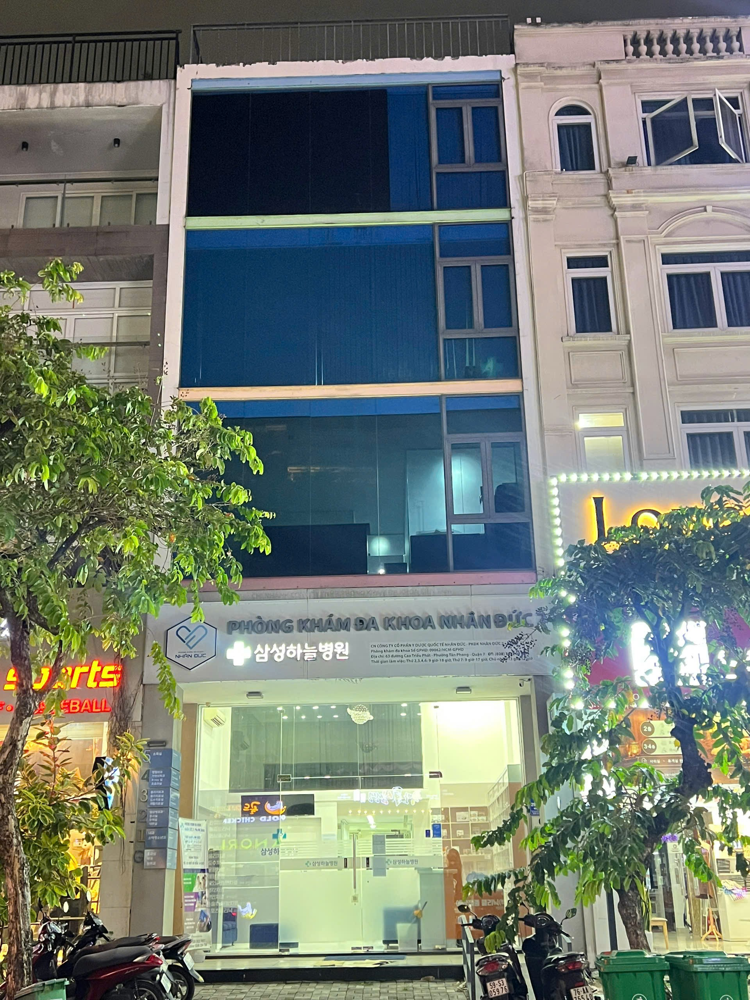

Nội khoa
Thăm khám, tầm soát và điều trị các bệnh lý nội khoa thường gặp ở người lớn.
Phòng khám đa khoa Nhân Đức đồng hành cùng bạn và gia đình bằng chất lượng y khoa chuẩn mực, sự thấu hiểu và dịch vụ tận tâm.

Một địa chỉ đáng tin cậy cho mọi nhu cầu chăm sóc sức khỏe của bạn và những người thân yêu.
Thăm khám, tầm soát và điều trị các bệnh lý nội khoa thường gặp ở người lớn.
Can thiệp và điều trị các bệnh lý ngoại khoa với quy trình an toàn, hiệu quả.
Phục hồi chức năng, giảm đau và cải thiện vận động sau chấn thương và bệnh lý.
Chăm sóc sức khỏe dài hạn và định kỳ cho cả gia đình với phương pháp cá nhân hóa.
Chăm sóc sức khỏe và phát triển cho trẻ em trong từng giai đoạn quan trọng.
Khám và chẩn đoán hình ảnh chính xác để hỗ trợ điều trị kịp thời và hiệu quả.


Chúng tôi tin rằng một trải nghiệm khám chữa bệnh tốt bắt đầu từ việc lắng nghe. Mỗi quy trình tại MediCare Plus đều được thiết kế để bạn cảm thấy an tâm, được tôn trọng và chăm sóc đúng cách.
Nội khoa tổng quát
Chẩn đoán hình ảnh
Nhi khoa
Y học gia đình
Vật lý trị liệu
Ngoại khoa
Y học gia đình
Chịu trách nhiệm chuyên môn kĩ thuật và khoa Ngoại
Nhi khoa
Y học gia đình
Chuẩn đoán hình ảnh
Để lại thông tin, đội ngũ chăm sóc khách hàng sẽ gọi lại xác nhận lịch hẹn trong vòng 15 phút.
Tôi luôn cảm thấy được lắng nghe và chăm sóc tận tình mỗi lần đến MediCare Plus. Không gian sạch sẽ, bác sĩ giỏi và các bạn nhân viên rất dễ thương.
MediCare Plus mở cửa từ 07:30 đến 20:00 mỗi ngày, kể cả cuối tuần. Bạn có thể gọi hotline XXXX XXXX để được hỗ trợ ngoài giờ.
Bạn chỉ cần mang theo giấy tờ tùy thân, thẻ bảo hiểm (nếu có) và các kết quả xét nghiệm gần đây.
Phòng khám hỗ trợ tiền mặt, thẻ ngân hàng, chuyển khoản và các ví điện tử phổ biến.